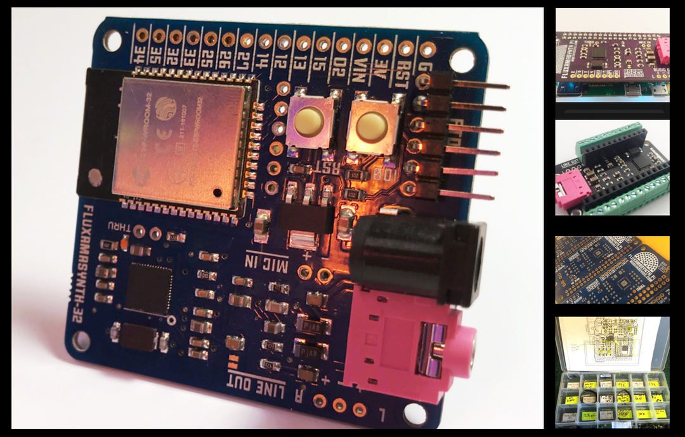

2018
Fluxamasynth Modules
The Fluxamasynth is a platform for instrument building and generative music. The module is a programmable synthesizer in several different form factors for use with Arduino, Raspberry Pi, or the ESP32.
Fluxamasynth on Hackaday
At Modern Device